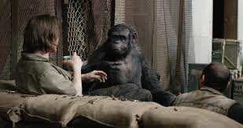
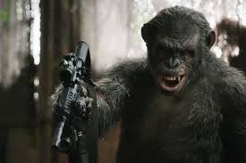
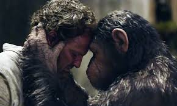
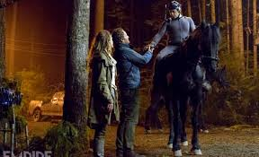

|
Dawn of the Planet of the Apes is a 2014 American science fiction film directed by Matt Reeves and written by Mark Bomback, Rick Jaffa and Amanda Silver. It stars Andy Serkis, Jason Clarke, Gary Oldman, Keri Russell, Toby Kebbell, and Kodi Smit-McPhee. It is the sequel to the 2011 film Rise of the Planet of the Apes, which began 20th Century Fox's reboot of the original Planet of the Apes series. |
|  |  |  |  |
Apes
Humans
A growing nation of genetically evolved apes led by Caesar is threatened by a band of human survivors of the devastating virus unleashed a decade earlier.
They reach a fragile peace, but it proves short-lived, as both sides are brought to the brink of a war that will determine who will emerge as Earth's dominant species.
Some years after his escape from captivity Caesar heads a vast colony of apes and chimps living a self-sufficient life in the woods outside San Francisco. In the city itself a depleted
group of Simian Flu survivors struggle to exist, their best hope being to revitalise a hydro-electric dam which will restore their power. However to reach it they must pass through Caesar's domain.
Group leader Malcolm and Caesar have a mutual respect which allows the restoration to take place but Caesar's embittered lieutenant Koba, a victim of animal experimentation, has no such faith in humans
and usurps Caesar, leading a full-scale attack on the city, most of whose inhabitants regard the apes as savages and a fierce battle takes place. It is down to Caesar and Malcolm to join the voices of reason
together to re-establish a peace which will benefit both camps.